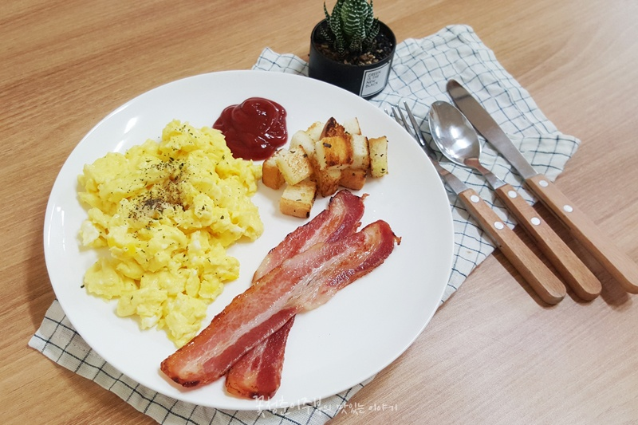

Soft Scrambled Eggs Recipe
Description
A simple scrambled egg recipe made with milk and butter for a soft texture. It is a light and mild dish that works well as a basic breakfast side.

Ingredients
- Main Ingredients
- Eggs: 3 large eggs
- Milk: 1/2 cup (Standard measuring cup)
- Butter: 2 tablespoons
- Seasoning
- Sugar: 1/3 tablespoon
- Salt: 1/3 tablespoon
- Black Pepper: A pinch
Instructions
- Prepare the Egg Base
- Crack 3 large eggs into a mixing bowl.
- Add 1/2 cup of milk to the bowl.
- Seasoning
- Add 1/3 tbsp of sugar and 1/3 tbsp of salt to the mixture.
- Whisking
- Whisk thoroughly until the eggs, milk, sugar, and salt are completely combined.
- Melting the Butter
- Place a frying pan over medium heat and melt the butter.
- Cooking (The Scramble)
- Once the butter is fully melted, pour in the egg mixture.
- Using a wide spatula, gently push the eggs from the edges toward the center to create soft, fluffy curds.
- Finishing Touches
- Turn off the heat when the eggs look slightly undercooked and moist.
- Transfer to a plate, sprinkle with black pepper, and serve.